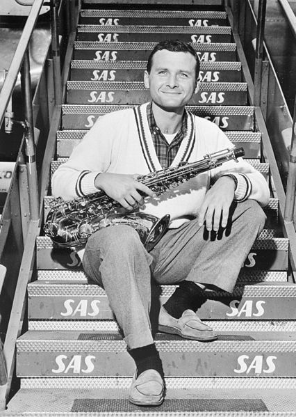

Favorite Artists
The following is a list of a few of Evan's favorite jazz artists.
-
Gerry Mulligan

-
Maynard Ferguson

-
Stan Getz
 -
Michel Camilo
Top 10 Favorite Songs
The following is a list of Evan's favorite jazz songs with links to their respective Youtube videos. Although some of the artists are not listed as favorites above, it does not mean they are not amazing!
- Just Kidding - Michel Camilo
- Desafinado - Stan Getz
- Utter Chaos - Gerry Mulligan
- Cruisin' For A Bluessin' - Maynard Ferguson
- Bucks County Bounce - Sam "The Man" Taylor
- Moanin' - Mingus Big Band
- Walkin'shoes - Gerry Mulligan
- Don't Let The Sun Go Down On Me - Maynard Ferguson
- Just Like You - Michel Camilo
- Fine and Mellow - Gerry Mulligan